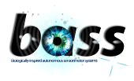

BASS

Das Projekt BASS dreht sich um den speziellen »Einsatzort Mensch« und dies aus gutem Grund, denn gerade ältere Menschen können von technischer Unterstützung im Alltag profitieren. In diesem Zusammenhang erfreuen sich sowohl Hausnotrufsysteme, als auch mobile Pflegedienste immer weiter wachsender Beliebtheit.
BASS realisiert eine andere Form der Hilfe und schließt durch seine ständige Verfügbarkeit die Lücke, die viele andere Dienste offen lassen. Durch intelligente Hilfe können dem Anwender verschiedene Alltagssituationen erleichtert werden.
Das System funktioniert durch eine ausgeklügelte Lokalitäts- und Aktivitätserkennung, gepaart mit Elementen der virtuellen Realität, um so eine interaktive Umgebung zu erschaffen. Diverse Sensoren ermitteln Daten, aus denen mittels Sensorfusion die ausgeführte Aktion berechnet und Folgeaktionen geschlossen werden können. Hierdurch lassen sich die Elemente der interaktiven Umgebung zielgerichtet steuern.
Auf diese Weise wird der Proband aktiv bei seinen Handlungen unterstützt, so dass für den gesamten Alltag eine Erleichterung erzielt wird.
Die Besucher können sich auf dem Projekttag ein Bild von unserer Arbeit machen und sehen, welche Möglichkeiten der Lokalitäts- und Aktivitätserkennung bei BASS zum Einsatz kommen und welche Fähigkeiten der virtuellen Realität genutzt werden.